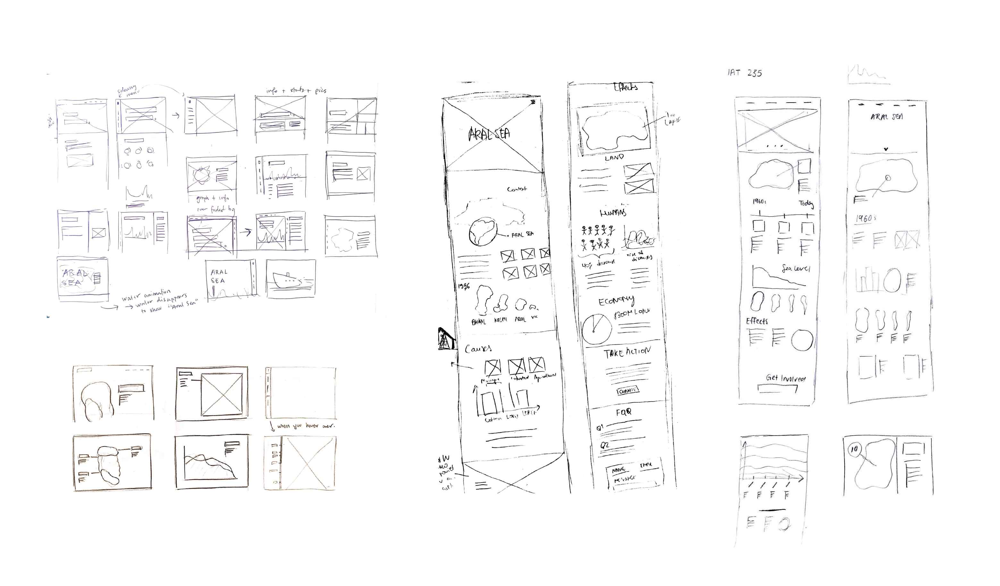
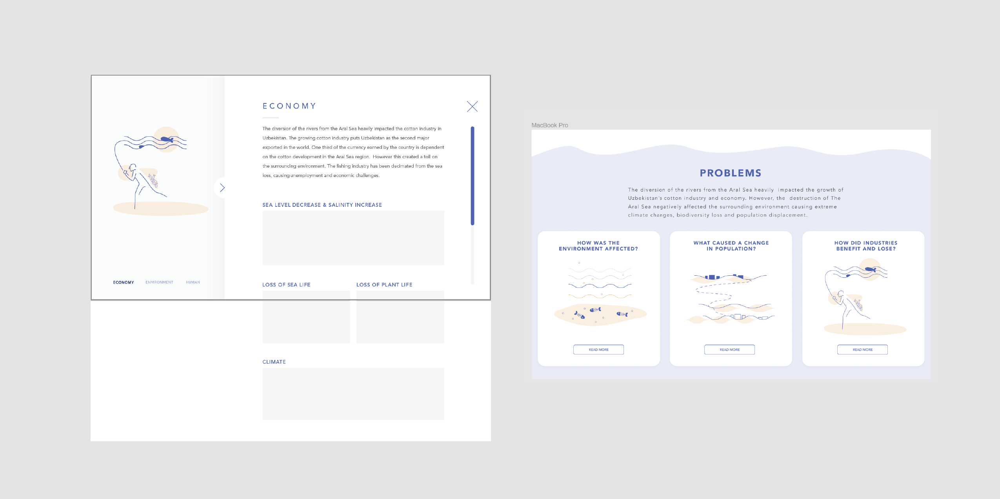

Interface design, Front-end development, Content research and strategy
HTML + CSS, Javascript, Figma, Adobe Illustrator
Once the fourth largest lake in the world, the Aral Sea has been shrinking drastically since the 1960s and is now one of the world's largest man-made disasters. The loss of water volume has caused environmental, societal, and economical problems for the local area. Our team wanted to highlight these issues and visualize the effects of the disaster in clear and concise ways on our website.
We used our sketches as guides for our website layout. High fidelity wireframes were created for more complex layouts to and to help us visualize how the “more info” section would look like. The “problems” page was reiterated into a high fidelity wireframe as well based on the feedback we received from peers and mentors.
The content of the site was divided into sections and told in a chronological manner, providing the audience with context of the Aral Sea before moving into the problems and solutions. The problem section was then further split into our three areas of focus. Our team wanted the site to be simple and easily navigable in order to not pull attention away from the content. This proved to be a challenge as there was an overload of scattered information and statistics.
 To tackle the overload of information, the team opted to use graphics and gifs to help visualize chunks of information along with infographics using grid layouts to organize statistics. The grid allows the infographics to be easily stacked for responsiveness.
This project was a learning experience in areas of content research and the presentation of information in addition to solidifying skills of user interface design. Our team was able to tackle a large amount of data and work with simplifying it into designs that would be easy to visually absorb. I was satisfied with the resulting project and had fun working with my team!